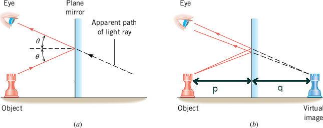

Image
Anything that send out rays of light (either emitted or reflected) is called an object. Anything that can be 'seen', either directly or through a mirror or a lens and so on is an object, e.g. a table, a car, a person., etc.
When a beam of light, starting from an illuminated point object, suffers a change in direction due to reflection (or refraction), the reflected (or refracted) rays converge to a certain point or appear to diverge from a certain point. This fixed point is called the image of the object. Stigmatism (gr. στίγμα point) is the condition attained when the image of the object is focused to a sharp point, by the optical instrument. Astigmatism literally means lack of a focal point.
Images are classified as real or virtual. A real image is formed when light rays pass through and diverge from the image point; a virtual image is formed when the light rays do not pass through the image point by only appear to diverge from that point.
